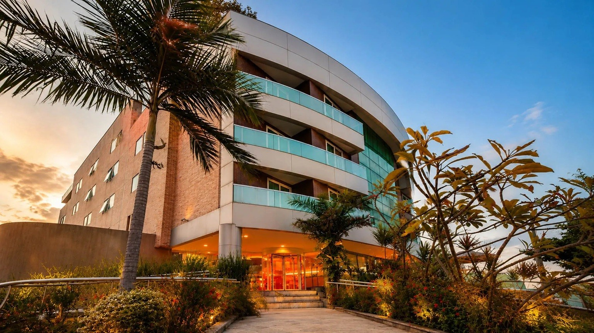

SEMANA NACIONAL DE
OBRAS PÚBLICAS e Serviços de Engenharia
Capacitação prática em planejamento, orçamentação, BDI, compliance e fiscalização de acordo com a Lei nº 14.133/2021.
Apresentação
A contratação de obras e serviços de engenharia exige planejamento, segurança jurídica e constante atualização diante da Lei nº 14.133/2021, da Reforma Tributária e da incorporação da tecnologia ao core BIM e Inteligência Artificial.
Para atender a essa demanda, a ESAFI promove a Semana Nacional de Obras Públicas e Serviços de Engenharia, reunindo especialistas para debater as melhores práticas em planejamento, orçamento, 3DI, fiscalização contratual, compliance e inovação nas contratações públicas.
Ao longo de três dias, os participantes terão acesso a conteúdos práticos e estratégicos, além de oportunidades de networking e troca de experiências, fortalecendo sua atuação na condução dos processos de contratação mais eficientes, seguros e alinhados às melhores práticas da Administração Pública.
Público-Alvo
Servidores e servidoras públicos e técnicos da Administração Pública que atuam nas áreas de Engenharia e Arquitetura, Licitações e Contratos, Planejamento, Obras Públicas, Fiscalização Contratual, Controle Interno, Assessoria Jurídica, Orçamento, Finanças e demais atividades relacionadas às contratações de obras e serviços de engenharia.
Palestrantes
André Baeta

André Kuhn
Hamilton Bonatto
Marcio Medeiros
Tatiana Camarão
Washigton Luke
Programação
Local do Evento

Hotel Verde Green
A três minutos da praia de Cabo Branco, o hotel oferece toda a estrutura necessária para os encontros de capacitação, com conforto e comodidades que garantem a melhor experiência.
O evento em um só local, o ESAFI garante o melhor aproveitamento do tempo dos participantes, sem deslocamentos entre os espaços de conteúdo e networking, tornando os encontros mais produtivos.
- Av. João Machado, 210 — Manaíra, João Pessoa - PB, 58038-000
- Hospedagem sujeita a disponibilidade e valores diretamente com o hotel.
Perguntas Frequentes
É uma experiência de capacitação ampla e multidisciplinar, que reúne, em um único evento, os maiores professores especialistas do Brasil, múltiplos temas e conhecimentos complementares.
O participante tem acesso a uma formação de altíssimo nível, aliando atualização, aplicação prática, diferentes perspectivas sobre temas relevantes, troca de experiências e insights, além da oportunidade de ampliar sua visão e adquirir conhecimentos que podem ser aplicados diretamente em sua atuação na Administração Pública.
Sim. Esta é uma capacitação multidisciplinar e a programação é pensada para proporcionar conhecimentos que podem contribuir com diferentes servidores e áreas de uma mesma instituição. A participação de mais membros de diversas equipes também favorece a troca de experiências, o alinhamento de práticas e a disseminação do conhecimento no ambiente de trabalho.
Sendo assim, esta capacitação é indicada para os servidores envolvidos na elaboração de editais, licitações, execução e fiscalização de contratos, gestores, fiscais e membros de comissões, como também para técnicos das áreas de orçamento, contabilidade, controle interno, jurídico, patrimônio, auditoria e gestão.
Recomendamos realizar as inscrições o quanto antes, pois é a inscrição que garante a reserva da vaga na turma. Havendo uma autorização inicial para a participação dos servidores, mesmo que seja verbal, não é necessário aguardar a conclusão do processo de contratação.
A inscrição não gera cobrança ou obrigação de participação e poderá ser cancelada posteriormente, se necessário. Essa antecedência é especialmente importante em razão da alta procura e da possibilidade de algumas turmas atingirem sua capacidade máxima.
Após a inscrição, será gerado um comprovante, e a instituição poderá dar continuidade aos seus procedimentos internos de contratação. Quando a Nota de Empenho for emitida, basta encaminhá-la à ESAFI para a confirmação definitiva da participação.
Ainda não. Você deverá aguardar a confirmação oficial da turma antes de adquirir passagens aéreas e reservar hospedagem.
Assim que o quórum mínimo for atingido e a realização da Semana de Capacitação estiver confirmada, a ESAFI enviará um e-mail de confirmação aos participantes inscritos. A partir desse comunicado, a instituição poderá organizar a viagem com toda segurança.
De acordo com a recomendação do Ministério da Educação, todos os participantes que atingirem a carga horária mínima de 75% receberão certificado físico, em mãos, ao final da Semana de Capacitação.